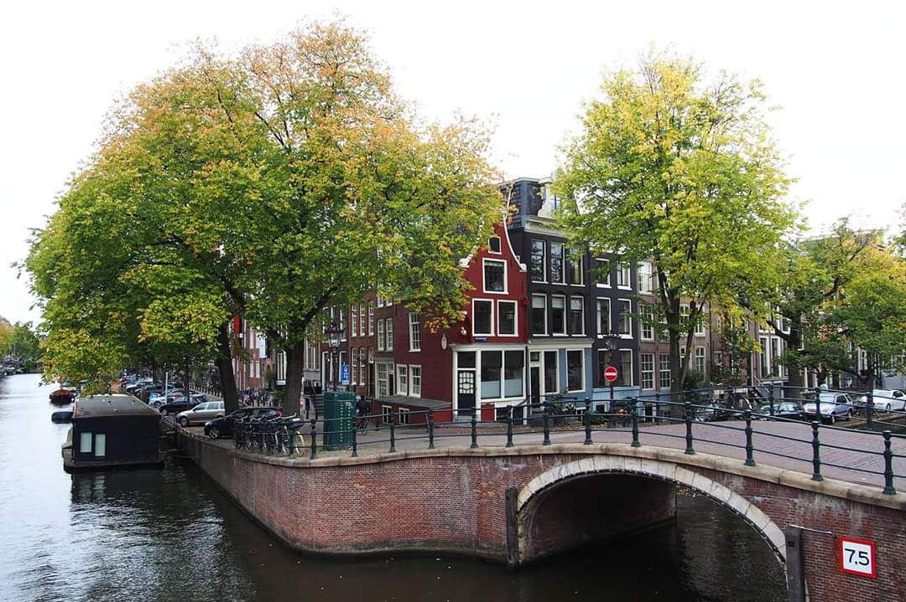

Cities
The beauty of Dutch cities

Despite the small size of the country, the Netherlands has lots of beautiful cities and towns to discover. With canals, beautiful gabled houses, museums and more, Dutch cities are certainly some of the most picturesque in Europe. Strolling around their old streets or taking a canal boat along the waterways is magical, and there is a welcoming and friendly air about the country in general. Laid-back, but with a sense of fun, exploring all that the cities in the Netherlands have to offer will provide you with lasting memories.
These are some Dutch cities you should visit in The Netherlands;
- Amsterdam
- Amersfoort
- Alkmaar
- Arnhem
- Breda
- Delf
- Den Bosch
- Den Haag (The Hague)
- Groningen
- Haarlem
- Leiden
- Maastricht
- Nijmegen
- Rotterdam
- Utrecht
- Zwolle